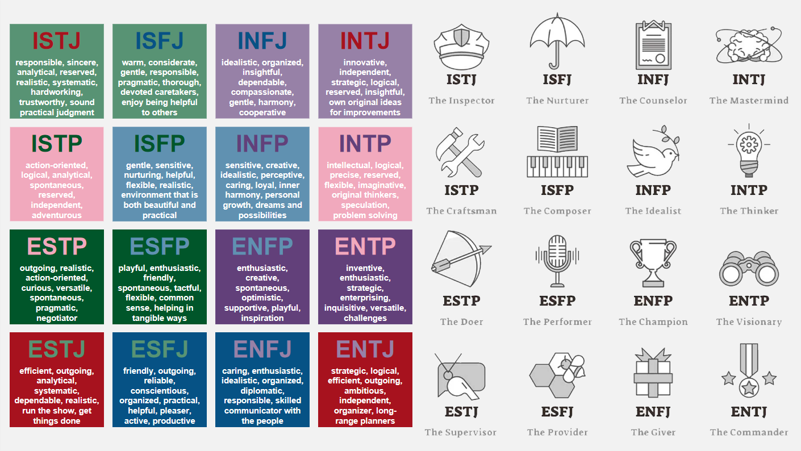

|
|---|
|  |  |
|---|
| Question | Answer | Question | Answer |
|---|---|---|---|
| At a social event, do you... | Interact with a few people known to you | Do new interactions with others... | Stimulate and energise you |
| Are you more... | Realistic | Are you more frequently... | A practical person |
| Are you usually... | Fair minded | Which are you drawn to? | Accurate perception |
| Do you tend to be more... | Dispassionate | Which is more satisfying? | To discuss an issue thoroughly |
| Do you prefer to work.. | To deadlines | Which rules you more? | Your head |
| Do you tend to make choices... | Rather carefully | Are you more more comfortable with work that is... | Done on a more casual basis |
| Are more interested in... | Facts | Do you prefer... | A few friends with longer contact |
| At social events, do you... | Stay late with increasing energy | Are you drawn more towards... | Substantial information |
| Are you more of a... | Sensible person | Are you more interested in... | Production |
| Are you drawn more towards... | Hard data | Are you more comfortable with being... | Objective |
| Is it more natural for you to be... | Nice to others | Do you value yourself to be more... | Devoted |
| When you meet people for the first time, are you... | Personal and engaging | Which statements are you most comfortable with? | Final statements |
| With regards to keeping an appointment, are you... | Punctual | Are you more comfortable... | After a decision has been made |
| Which bothers you more? Having things... | Incomplete | Do you... | Find little to say to strangers |
| With groups of friends, do you... | Get behind with the news | Are you more interested in... | A specific instance |
| Are you more interested in... | Concepts | Do you feel... | More creative than practical |
| Do you prefer writers to... | Use lots of analogies | Are you drawn more towards... | Fundamentals |
| Are you naturally more... | Compassionate | In making judgements, are you usually more... | Neutral |
| In making judgement, are you more like to be... | Impersonal | Do you consider yourself to be more... | Clear headed |
| Do you usually... | Settle things | Are you more inclined to... | Schedule events |
| Are you usually rather... | Quick to agree on a specific time | Are you a person who is more disposed to... | Work to a routine |
| When phoning someone, do you... | Rehearse what you are going to say | Are you more inclined to be... | Easy to approach |
| Facts... | Usually require interpretation | Do you have more fun with... | Hands on experience |
| Do you prefer to work with... | Practical information | With the written word, do you prefer it to be... | More literal |
| Are you inclined to be more... | Cool and level headed | Are you usually more... | Unbiased |
| Would you rather be... | More merciful than just | Are you typically more... | Lenient than just |
| Are you comfortable... | Setting a schedule | Are you more likely to... | Delay making judgments |
| Are you comfortable with... | Written agreements | Do you tend to be more... | Deliberate than spontaneous |
| In groups of people, do you... | Wait to be approached | Are you typically more a person of... | Clear reason |
| Traditional common sense is... | Usually trustworthy | Are you inclined to be more... | Fair minded |
| Children often don't... | Daydream enough | Mostly, is it preferable to... | Make sure that things are arranged |
| Are you usually more... | Tender hearted | Is it more in your nature to... | Get things settled |
| Are you more... | Gentle than firm | When the phone rings, do you... | Try to get to it first |
| Are you more inclined to want arrangements to be... | Well organized | What do you value most in yourself? | To have a good sense of reality |
| What do you value more? Something that is... | Definite | Do you prefer things to be... | Neat and orderly |
 | |||
| To know more, view this ISTJ Report. | |||
| SECTION 1: UNDERSTANDING PERSONALITY TYPES AT WORK - COURSE INTRODUCTION |
|---|
| Introduction to Understanding Personality Types at Work |
| Knowing more about your unique personality can help you understand yourself better and make changes in your life that will make you more confident and successful.
Personality Types are really useful to help people understand themselves at a deeper level, to help them with their relationships, and to help with career decisions. Gives insights into communication skills, decision making, stress management, conflict resolution, and a whole host of other applications, so they really underpin the development of emotional intelligence. Carl Jung investigated Personality Types about 200 years ago, although his work was rather academic. A mother-daughter team Isabel Briggs Myers and Katharine Cook Briggs worked with his research, further refined it, and made it a whole lot more accessible for everyone. Personality Type assessment is based on their work and is now used throughout the world in many corporate organizations to help with leadership development and many of the other aspects. Myers-Brigss Type Indicator (MBTI) - we explore where people get their energy from, how people take in information, how they use this information to make decisions, and then how people work with this to structure and lead their lives 4 Preferences - combination of these makes up your personality type (each type has its own strengths and limitations) 
Understanding how the preferences are expressed will give you insights into how your own strengths and limitations, and those of other people work. This will help you to understand how to engage with people better. |
| Activity Booklet: Reflecting about this Personality Course |
| Understanding more about personality will help you to predict how people will respond to certain situations and the sorts of things they prefer and value.
Understanding your personality and yourself better will help you gain greater insights into your behaviour and your emotional well-beings. Your personality is what makes you who you are. It is often thought of as something that arises from within the individual and remains fairly consistent throughout life. Personality encompasses all of the thoughts, behavior patterns and social attitudes that impact upon how you view yourself and what you believe about others and the world around you. Knowing more about your personality will help you to understand: Your strengths and weaknesses Your likes and dislikes Which situations allow you to perform at your best Other people better |
| The Challenges of Self-Awareness and Emotional Intelligence |
|
Self-Awareness - cornerstone of emotional intelligence If you are a leader/ coach working with others to help them reach their true potential, you may be surprised at the negative reactions that you encounter from time to time. Discovering your true authentic self can be a daunting task. Learning about yourself by increasing your self-awareness is often a difficult process and can be challenging for a variety of reasons. Human psyche is intricate and multifaceted - understanding your thoughts, emotions and motivations can be challenging due to the the intricacies and depth of the self. Can be a complex and nuanced process, and so lack of guidance around working with it can be an issue. Many people struggle to know where to start or how to navigate their inner world effectively. Fear of Self-Reflection - some people may have a fear of what they will discover about themselves Worries that they’ll uncover unpleasant truths or confront difficult emotions Experiences from the past can lead to emotional trauma that can make it harder for some to access certain parts of their psyche Defense Mechanisms - protect themselves from any uncomfortable thoughts and feelings Includes denial or rationalisation, and being overtly critical of others to place blame upon them Lack of Time, Motivation, & Prioritisation in our fast paced world, many people are constantly busy and may not prioritise self-awareness or self-reflection, feeling that they don’t have the time to engage in introspection External stimuli, such as technology, work demands and social media can be a more pleasant distraction Emotional Avoidance - some people have difficulty dealing with their emotions; they may suppress them or ignore their feelings rather than exploring them Ego and Self-Image - a strong ego or attachment to a particular self image can make it challenging to acknowledge and accept aspects of yourself that don’t align with that image Admitting flaws or vulnerabilities can be difficult for the ego Resistance to Change - some people may resist change even if it’s positive because they feel uncomfortable or it’s unfamiliar to them Cognitive Biases - such as confirmation bias, seeking information that confirms existing beliefs, or the Dunning-Kruger Effect overestimating one’s abilities, can distort self-perception and hinder self-awareness Overcoming these challenges often requires patience, practice, and willingness to engage in self exploration |
| Working with Personality Types |